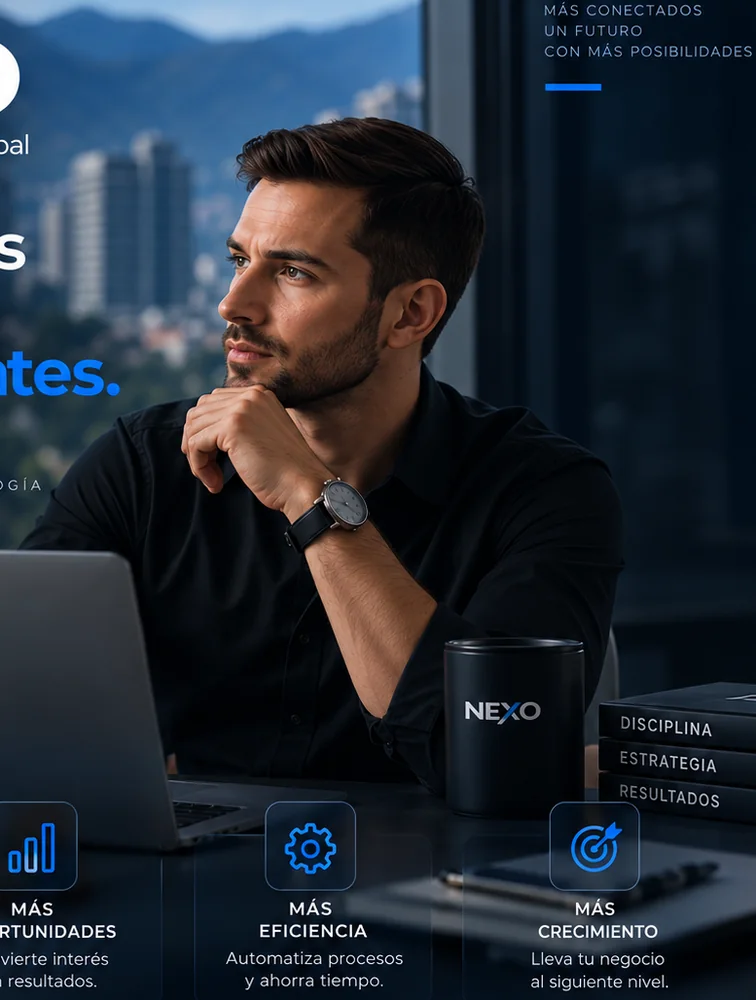

◎
Información aprobada
Servicios, precios, promociones, preparación y reglas definidas por el negocio.
Diseñamos asistentes digitales para negocios de estética y wellness que responden información aprobada, captan la intención del cliente, organizan solicitudes de cita y escalan al equipo cuando hace falta.

Hola, ¿cuánto cuesta una limpieza facial y puedo solicitar una cita para mañana?
Puedo compartirte la información aprobada del servicio y registrar tu preferencia para continuar con la solicitud.
La implementación puede estructurarse alrededor de servicios, precios, promociones, preparación, preferencias de horario y reglas de escalamiento. Las preguntas que requieren criterio profesional se mantienen con una persona.
Ver solución para estética ↗Servicios, precios, promociones, preparación y reglas definidas por el negocio.
Servicio de interés y preferencia de horario organizados para continuar con agenda.
Interés, solicitudes y acciones pendientes disponibles para que el equipo continúe.
Preguntas clínicas, sensibles o fuera de alcance pasan al equipo cuando corresponde.
Este flujo guiado usa un escenario de estética para mostrar la lógica de NEXO. Una implementación real se configura con la información, reglas e integraciones autorizadas de cada negocio.
Mira cómo una conversación frecuente de estética puede conservar contexto, identificar el servicio de interés y dejar una solicitud lista para seguimiento.
Lía fue construida para Estética Avanzada by Isabel Gómez con información aprobada del negocio, tono propio, atención por WhatsApp, soporte de agenda y escalamiento humano.
Servicios, precios y reglas de atención.
Contacto, historial y necesidades del cliente.
Solicitudes, oportunidades y seguimiento.
Visibilidad de la operación en un solo lugar.
Implementación fundadora real. No publicamos conversaciones, datos personales ni métricas privadas sin autorización.
No empezamos programando. Empezamos entendiendo cómo funciona tu negocio y qué experiencia quieres entregar.
Solicitar demoClientes, servicios, procesos, objetivos y puntos de fricción.
Funciones, tono, reglas, límites y cuándo debe intervenir una persona.
Conocimiento, flujos, identidad e integraciones.
Escenarios reales, ajustes y validación antes de salir.
Activación del canal y acompañamiento en producción.
Mejoras basadas en conversaciones, métricas y necesidades reales.
Configuramos un workspace privado para cada empresa, donde el equipo puede revisar lo que ocurre, identificar lo que necesita atención y trabajar con la información que genera su asistente.
Conversaciones & contactosContexto e historial organizados por cliente.
Leads & oportunidadesIntención comercial visible para seguimiento.
Agenda, tareas & alertasAcciones pendientes y handoffs en un mismo lugar.
Métricas & facturaciónMódulos habilitados según el alcance contratado.
Un caso puede pasar al equipo cuando requiere criterio o revisión.
Revisar →Leads, solicitudes y citas pueden quedar visibles para continuar.
Ver tareas →Conversación registradaEl contexto queda disponible.
Oportunidad identificadaEl interés puede pasar a seguimiento.
Acción organizadaAgenda, tarea o handoff según el flujo.
Empieza con lo que necesitas hoy y amplía funciones e integraciones a medida que tu operación evoluciona.
Conocimiento, personalidad, reglas, contexto, respuestas y escalamiento.
Reservas, solicitudes, recordatorios, confirmaciones y reprogramación según el negocio.
Captura datos, identifica interés, organiza oportunidades y facilita el seguimiento.
WhatsApp, calendarios, CRM, web, formularios y otras integraciones según alcance.
Diseñamos cada implementación alrededor de los canales y herramientas que realmente usa tu negocio. El alcance técnico se define durante discovery.
Una capa de operación. La conversación entra por un canal, NEXO conserva el contexto y la convierte en una acción visible.
Estas páginas muestran casos de uso posibles por sector. No representan casos de clientes activos ni resultados publicados.
Una primera capa de atención para preguntas frecuentes y coordinación con recepción.
Explorar hoteles → 02 / RESTAURANTESInformación consistente y escalamiento cuando el equipo necesita intervenir.
Explorar restaurantes → 03 / CLÍNICAS & ODONTOLOGÍAInformación autorizada y handoff humano para lo que requiere criterio profesional.
Explorar clínicas →NEXO está diseñado para que cada negocio mantenga visibilidad sobre lo que ocurre y decida cuándo debe intervenir una persona.
El dashboard requiere autenticación y cada empresa consulta únicamente la información que tiene autorizada.
Conversaciones, métricas, usuarios y facturación se organizan por empresa dentro de NEXO Platform.
La visibilidad y las acciones pueden limitarse según el usuario, la empresa y el alcance de cada implementación.
Cuando una conversación necesita criterio, revisión o atención especial, el flujo puede pasar a una persona.
Haz una estimación rápida con tus propios datos. No es una promesa de ahorro: sirve para dimensionar el volumen que vale la pena analizar en discovery.
Ese volumen es el punto de partida para decidir qué conviene automatizar, qué debe seguir en manos del equipo y qué métricas deberíamos medir.
No. Buscamos quitar carga repetitiva, organizar conversaciones y apoyar tareas como información, captura de leads, reservas o seguimiento. Tu equipo conserva el control de los casos que requieren intervención humana.
Sí. WhatsApp puede formar parte de la implementación, junto con calendarios, formularios, web, CRM u otras herramientas según el alcance técnico del proyecto.
No. Configuramos conocimiento, tono, servicios, horarios, precios, reglas y flujos alrededor de cada operación. NEXO no está pensado como una plantilla genérica.
Los clientes tienen acceso a un dashboard privado con los módulos habilitados para su empresa: conversaciones, leads, citas, métricas, facturación y más según el proyecto.
Tenemos planes Start, Growth, Pro y Custom. Cada uno combina un setup inicial con una cuota mensual de operación, mantenimiento y optimización. Ver planes y precios.
La revisamos durante discovery. Integraciones, módulos o automatizaciones fuera del alcance estándar se cotizan según complejidad y volumen.
Cuéntanos cómo manejas hoy precios, servicios, solicitudes de cita y seguimiento. Revisamos tu operación y preparamos una demo alrededor de ese flujo, sin sustituir el criterio profesional de tu equipo.